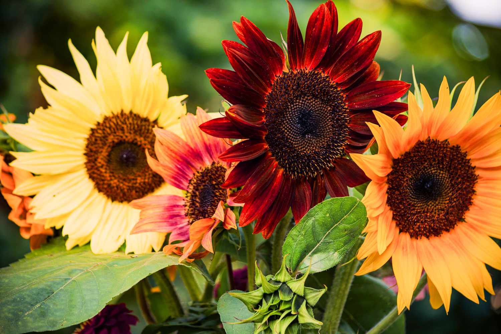
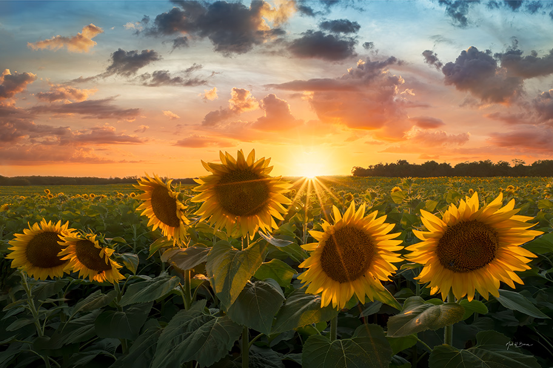

Sunshine Power
Sunshine with Sunflowers
By: Bee Meadow. Published: Jan. 22nd, 2026

sunflower, (genus Helianthus), genus of nearly 70 species of herbaceous plants of the aster family (Asteraceae). Sunflowers are native primarily to North and South America, and some species are cultivated as ornamentals for their spectacular sizeand flower heads and for their edible seeds. The Jerusalem artichoke (Helianthus tuberosus) is cultivated for its edible underground tubers.
The common sunflower (H. annuus) is an annual herb with a rough hairy stem 1–4.5 metres (3–15 feet) high and broad, coarsely toothed, rough leaves 7.5–30 cm (3–12 inches) long arranged in spirals. The attractive heads of flowers are 7.5–15 cm wide in wild specimens and often 30 cm or more in cultivated types. The disk flowers are brown, yellow, orpurple, while the petallike ray flowers are yellow. The fruit isa single-seeded achene. Oilseed varieties typically have small black achenes, while those grown for direct seed consumption, known as confection varieties, have larger black-and-white achenes that readily separate from the seed within.

The common sunflower is valuable from an economic as well as from an ornamental point of view. The leaves are used as fodder,the flowers yield a yellow dye, and the seeds contain oil and are used for food. The sweet yellow oil obtained by compression of the seeds is considered equal to olive or almond oil for table use. Sunflower oil cake is used for stock and poultry feeding. The oil is also used in soap and paints and as a lubricant. The seeds may be eaten dried, roasted, or ground intonut butter and are common in birdseed mixes.
